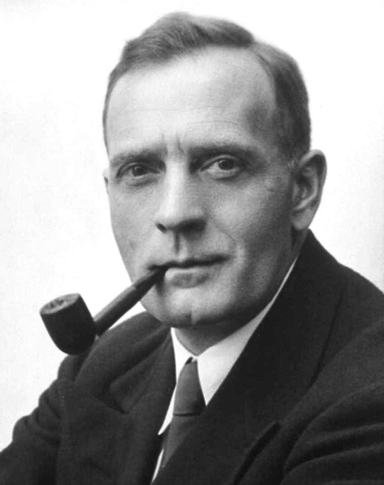

The expanding universe
Galaxies are moving apart because space itself is stretching. And for the last 5 billion years, ever faster.

.JPG){kind=link}
In the early 20th century almost everyone, Einstein included, thought the universe was static. Within a few years a series of discoveries changed everything: the universe is expanding.
Henrietta Leavitt's rule
In 1912 Henrietta Swan Leavitt, who worked at Harvard cataloguing stars for a pittance, discovered that in variable stars called Cepheids, the rhythm at which their brightness changes reveals how bright they really are. It was a revolutionary tool: comparing that true brightness with what we see tells you how far away a star is. Without her discovery, Hubble could not have measured anything.
The galaxies are fleeing
In 1929 Edwin Hubble, using Cepheids and the velocity data gathered by Vesto Slipher, showed that almost all galaxies are moving away from us, and that the farther away they are, the faster they recede. Lemaître had reached the same conclusion two years earlier in an article published in a little-read Belgian journal. That is why, since 2018, the rule has officially been called the Hubble–Lemaître law.

We are not moving away from a centre
That all galaxies are receding from us does not mean we are at the centre. Picture a raisin cake rising in the oven: from any raisin, all the others move away, and those farther off do so faster. The universe has no centre: it is space that is stretching between the galaxies.
That is why light from distant galaxies reaches us stretched towards red: the redshift. The greater it is, the farther away the galaxy and the further back in time we see it.
An accelerating universe
In 1998, two teams studying distant supernovae expected to find that the expansion was slowing under gravity. They found the opposite: it is speeding up, and has been for about 5 billion years. Whatever drives it we call dark energy. Saul Perlmutter, Brian Schmidt and Adam Riess won the 2011 Nobel Prize.
The Hubble tension
The rate of expansion is measured by the Hubble constant. There is a mystery: measured from the cosmic background it comes out at about 67 km/s per megaparsec, but measured with nearby stars and supernovae it comes out at about 73. The difference is small, but errors do not explain it. This Hubble tension might mean we are missing a piece of physics.
Bigger than its age
The universe is 13.8 billion years old, yet the observable universe is about 93 billion light years across. It is not a contradiction: while light from the most distant galaxies was travelling towards us, space kept stretching. The rule that nothing travels faster than light applies to objects moving through space, not to the expansion of space itself.